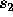

| Magic Numbers |
Write a program that finds and displays all pairs of integers and  such that:
The input file consist a integer at the beginning indicating the number of test case followed by a blank line. Each test case consists of one line of input containing N. Two input are separated by a blank line.
For each input the output consists of a sequence of zero or more lines each containing / = N, where
 and N are the integers described above. When there are two or more solutions, sort them by increasing numerator values.
Two consecutive output set will separated by a blank line.
and N are the integers described above. When there are two or more solutions, sort them by increasing numerator values.
Two consecutive output set will separated by a blank line.
1 1234567890
1234567890 / 1 = 1234567890 2469135780 / 2 = 1234567890 4938271560 / 4 = 1234567890 6172839450 / 5 = 1234567890 8641975230 / 7 = 1234567890 9876543120 / 8 = 1234567890